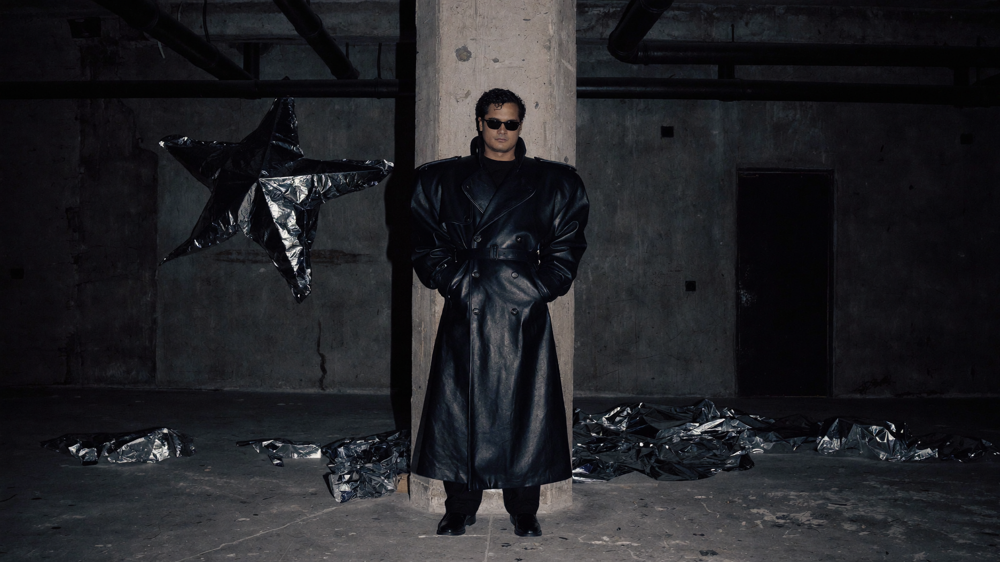
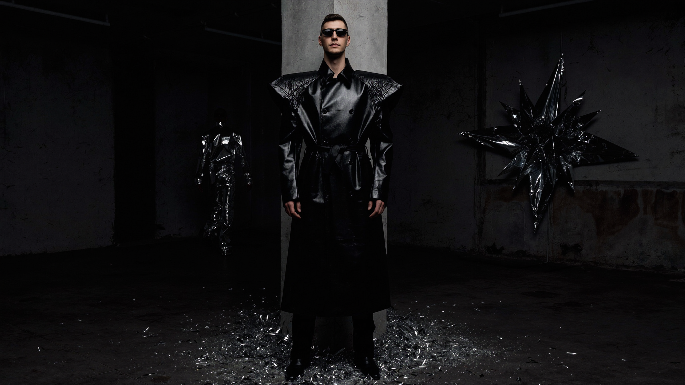

LOTUS / 03
LOTUS 2063 expands black ceremonial dressing into oversized ritual silhouettes. Built for humid corridors, late transmission hours and the social theatre of future nightlife.
01 / Main campaign

02 / Gallery
Campaign sequence / asset hook 01
Campaign sequence / asset hook 02
03 / Worn by the Inhabitants
Lotus 63
Inhabitant Studies
Three bodies translate the collection into distinct signals across Berlin’s future-night architecture.



04 / Material studies
Black textile / humid surface / study hook